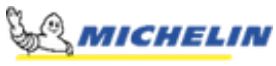

Hobbies
Contacts
Philippe Kahr
Engineering Project Manager
Summary
Well, Biff. Hello, hello, anybody home? Think, McFly, think. I gotta have time to recopy it.
Do your realize what would happen if I hand in my homework in your handwriting? I'd get kicked out of school.
You wouldn't want that to happen would you, would you? Y'know this time it wasn't my fault.
The Doc set all of his clocks twenty-five minutes slow.
Education
- Certificate in Applied Computer Science (2015)
- Bachelors in Mechanical Engineering (2004)
- College Diploma, Mechanical Engineering (2001)
Work Experience
- Engineering Project Manager
Taiga Motors | December 2022 - To Present
- Oversee and coordinate Watercraft (ORCA) engineering projects from inception to completion
- Manage project planning, budgeting, scheduling, and resource allocation
- Serve as a technical expert for design and manufacturing
- Serve as a liaison between stakeholders to ensure effective communication and collaboration.
- Monitor progress, identify risks, and ensure projects meet quality, deadline, and budgetary requirements.

- Project Manager, Track Design
Michelin | August 2018 to December 2022
- Project Management and track design from idea to production deployment.
- As a Technical Expert, I specialize in designing rubber tracks and
implementing new concepts and best practices. My expertise includes
understanding load cases, track wear, and real-world field applications. I
excel in validation and testing, as well as mold design and field service
tracking
- Conducted Finite Element Analysis (FEA) on metal bars and correlated the
results with real-world testing.
- Production Supervisor
- Commercial Project Manager
Skills
- Program / Project Management
- Project ideation
- Resource allocation
- Budget planning and tracking
- Pitch projects to business owners
- Serve as a technical expert
- Strong Technical Skills
- Power Sport Product Design
- Rubber Track Design and Processes
- Design of injected molded parts, material and processes
- Excellent Communicator